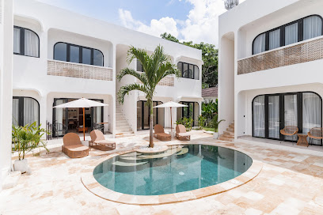
Мы арендовали апартамент 4A в комплексе Melasti Reef (Ungasan, Bali) через агентство Suite Stay на один месяц: с 17 января по 17 февраля 2026 года. Стоимость — 18 000 000 IDR/мес. + залог 5 000 000 IDR.
В общей сложности мы прожили на Бали 11 месяцев и сменили несколько мест. Везде случались мелкие проблемы — это нормально. Но во всех предыдущих местах менеджеры или хозяева решали вопросы моментально: ты написал, тебе ответили, проблема устранена. Здесь же всё иначе. Главная проблема — не само здание, а абсолютно бесполезный менеджмент. Вы отдаёте деньги и остаётесь полностью беспомощны: на территории нет ни одного человека, к которому можно подойти лично. Единственный канал связи — групповой чат в WhatsApp с пятью сотрудниками, которые систематически игнорируют сообщения, отвечают шаблонными извинениями и не хотят решать проблемы.
Когда мы попросили вернуть деньги и съехать — нас проигнорировали. Когда мы требовали контакты руководства — нас проигнорировали. Залог вернули с задержкой и только после угрозы публикации отзывов. Ниже — подробный, подкреплённый фактами отчёт.
Каждая проблема тянулась днями и неделями. Мы получали бесконечные извинения, но реальных действий не было. Ниже — хронология нашего взаимодействия с управляющей группой, в которой участвовало 5 человек: Intan, Nia, Celine, Aprille, Niel.
С первого дня проживания вода в душе шла только 2 минуты, после чего напор исчезал и горячая вода переставала поступать. Нормально принять душ невозможно. Сообщаем в чат. Ответ: «сообщим мастеру».
Мастер приходит и заявляет, что «проблем нет». Давление воды «нормальное», проверили — «всё работает». По факту проблема осталась.
Повторно отправляем видео проблемы с водой в душе. Нас просто игнорируют.
После уборки в квартире появился сильный затхлый запах из-за старых тряпок. Управляющие заявляют, что запах якобы от наших вещей. Уборщик приходил формально, но качество работы — нулевое: штукатурка за дверью ванной лежала со времён стройки и пролежала там весь месяц. Постельное бельё за месяц поменяли один раз — и то после личной просьбы.
Вода отключена на несколько часов. Нас не предупредили. Позже сообщили, что проводились «плановые работы».
С потолка ванной начала капать вода с резким запахом мочи. Протечка попадала прямо на унитаз и на пол, делая пользование туалетом невозможным. Вода капала рядом с электропроводкой, создавая опасность поражения током.
Интернет перестал работать. Сообщаем немедленно, прикладываем фото роутера. Для удалённых работников это критично.
Отправляем длинное сообщение с перечислением всех нерешённых проблем, тегаем всех 5 участников группы. Celine отвечает шаблонными извинениями.
Интернет не работает уже 3 дня. Просим позвонить провайдеру. Провайдер назначает ремонт на четверг (29 января). Обнаруживается проблема с водяным насосом.
Интернет-мастер наконец приходит — спустя 6+ дней без интернета.
Мастер заделал потолок — заплатка отвалилась через несколько часов. Тяжёлые куски штукатурки падали прямо на нас. На просьбу срочно вернуть рабочих ответили, что «у них расписание занято» и они придут завтра. Штукатурка падает на голову, а управляющая компания считает, что это может подождать.
Ремонтники не вернулись. Пишем: «Почему не пришли? Мы не можем нормально пользоваться туалетом, с потолка капает вода с запахом мочи». Ответ: «Извиняемся, надеемся завтра».
Потолок вздулся от воды, на полу лужа. Рабочие приходят — уходят ничего не сделав.
Впервые просим о возврате денег и выселении: «We want to move out. Please return our money and we will relocate to another place. Living here is unbearable.» Запрос на возврат полностью проигнорирован. Рабочие приходят и говорят, что им нужно ещё 2 дня на ремонт.
Массовые пинги всех 5 участников. Пробуем позвонить — трубку не берут. Рассчитываем сумму возврата: 12 800 000 IDR и отправляем в чат. Просьба о возврате снова полностью проигнорирована.
Intan отвечает впервые за 3 дня (говорит, что была в больнице). Объясняет, что это «structural issue from the original developer». Вопрос возврата денег полностью проигнорирован — ни слова о нашем запросе на выселение и возврат.
Временное решение не работает. Протечка продолжается. Запрашиваем контакты тех, кто может решить вопрос — нас снова игнорируют. С 6 февраля на наши сообщения больше никто не отвечает.
10 дней полного молчания со стороны управляющей команды. Протечку в итоге устранили примерно за 5 дней до выезда, но наш запрос на возврат денег так и остался без ответа.
Сообщаем о выезде завтра. Нам говорят, что залог вернут через 14 рабочих дней (а не в день выезда, как это принято).
Выезжаем. Передаём реквизиты BNI банка. Нам обещают вернуть залог в течение 10–14 рабочих дней.
Денег нет. Пишем — тишина.
Intan отвечает: «Apologies for the delay, let me follow up to our finance».
Денег по-прежнему нет. Пишем повторно и в личный чат, и в группу.
Предупреждаем: если не вернёте, опубликуем отзывы на всех платформах.
Залог наконец возвращён — только после угрозы публикации отзывов. Вместо обещанных 10–14 дней прошло 21 день.
Наши соседи сверху — ребята из Нидерландов — столкнулись с аналогичными проблемами: протечки воды, грязь в помещении и другие неисправности, которые менеджмент точно так же не решал. Они приходили к нам два-три раза обсудить ситуацию — мы были удивлены, насколько наш опыт совпадает.
Именно они предупредили нас, что нашли отзывы других арендаторов, в которых описывается систематический невозврат депозитов этой компанией. Как выяснилось позже, наш случай полностью это подтвердил.
Однажды, во время моего рабочего созвона, я слышал, как сосед ходил по двору и звонил управляющему, пытаясь добиться хоть какой-то реакции на свои проблемы. Его игнорировали — как и нас. У него практически случился нервный срыв. Это наглядно показывает, что наш случай не единичный: система работает так, что арендатор остаётся один на один с проблемами, без какой-либо возможности повлиять на ситуацию.
Ниже — скриншоты ключевых моментов переписки, подтверждающие систематическое игнорирование наших обращений.
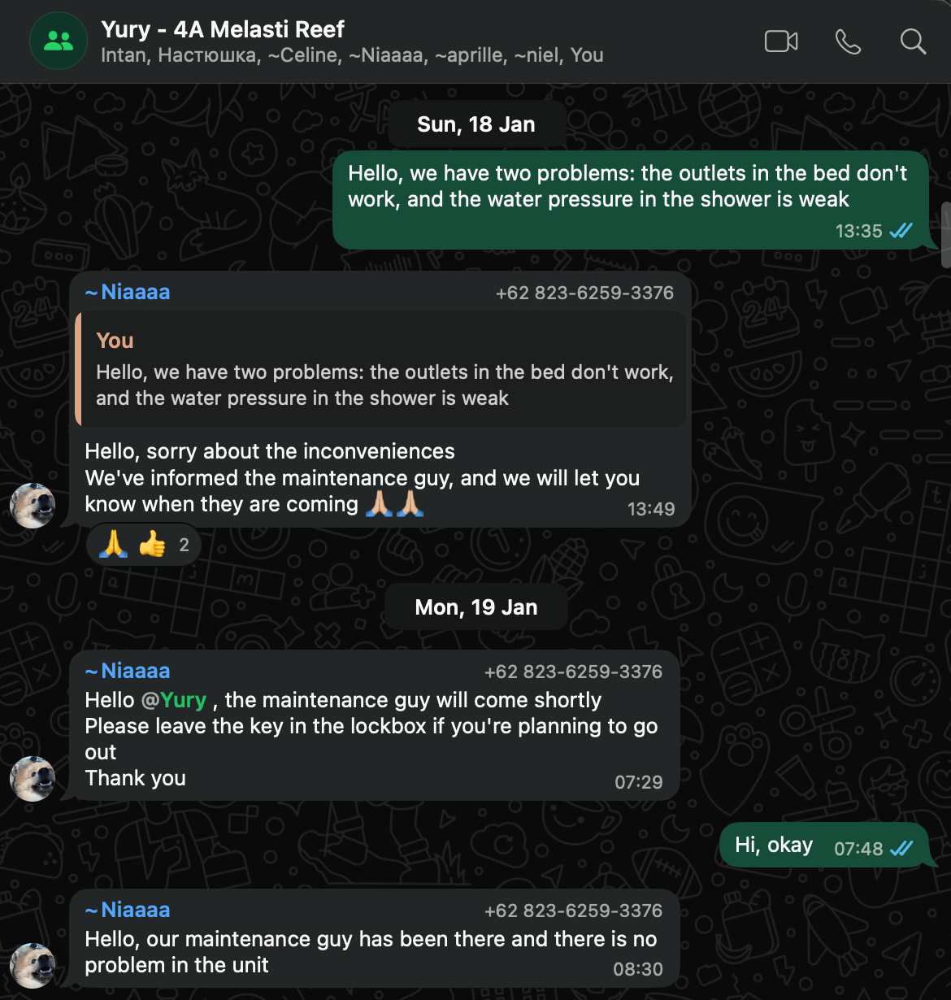
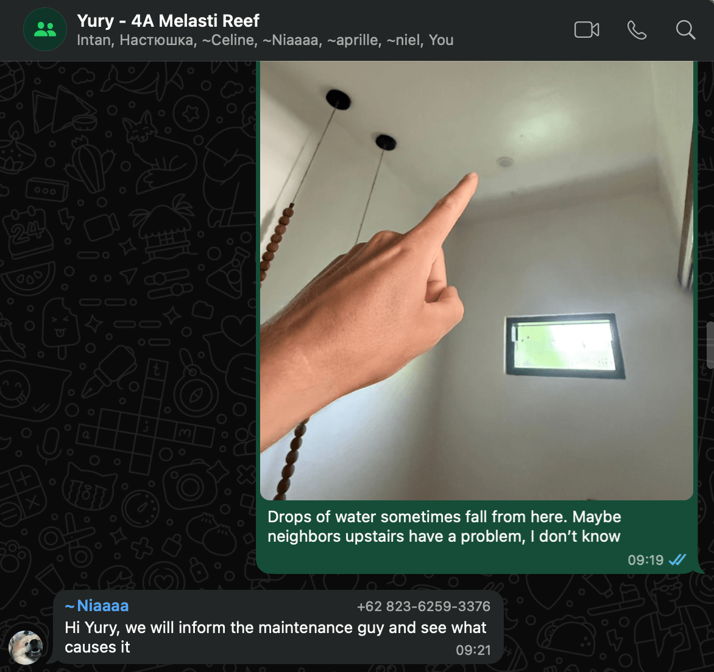
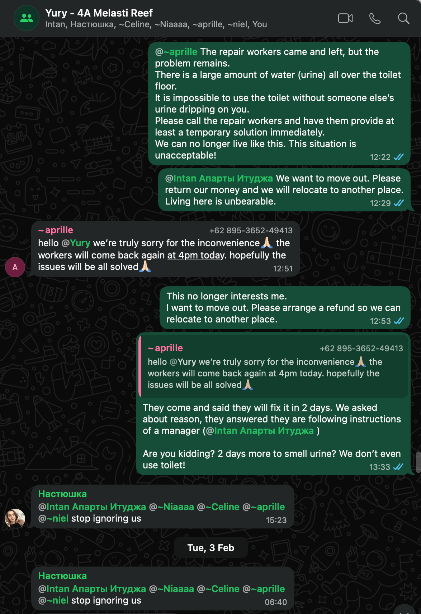
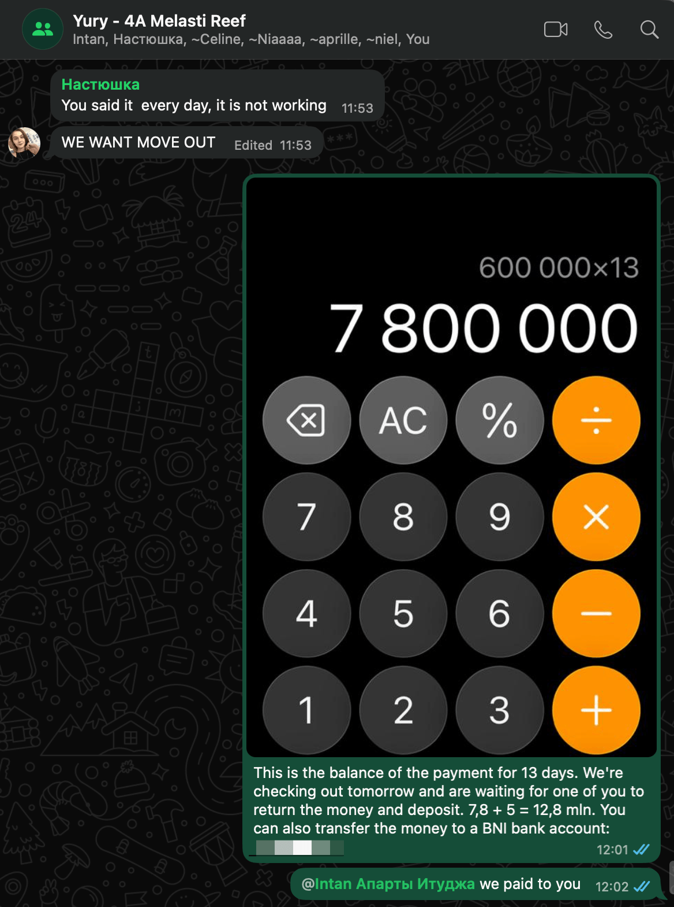
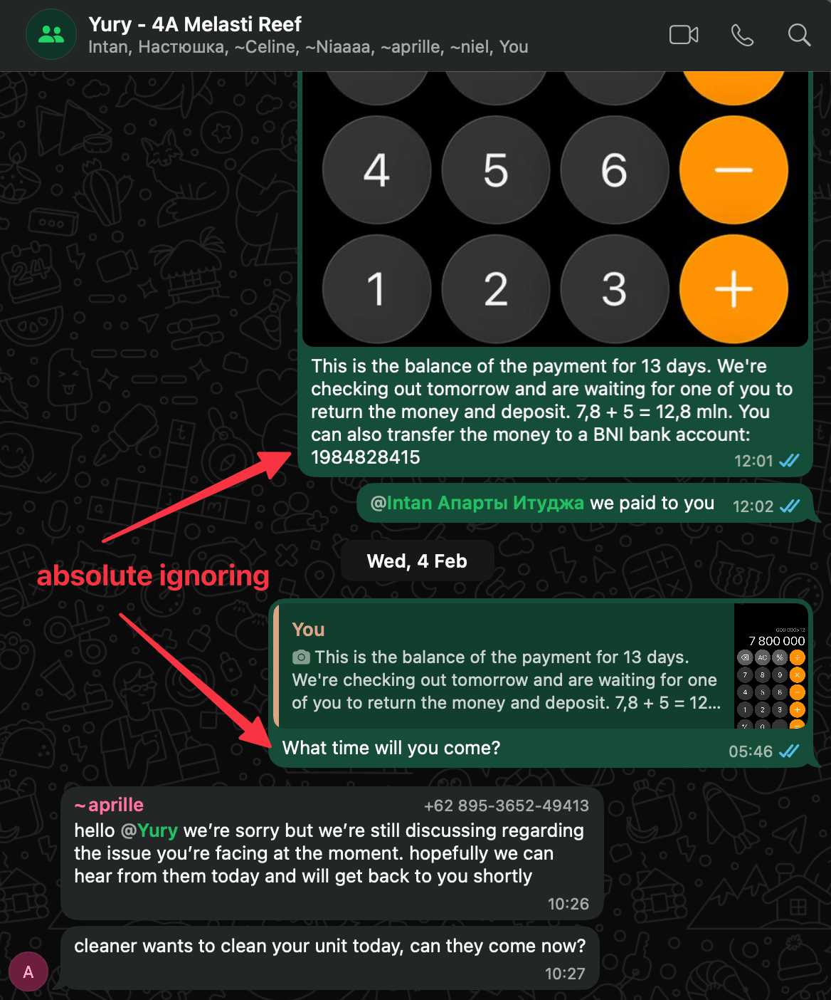
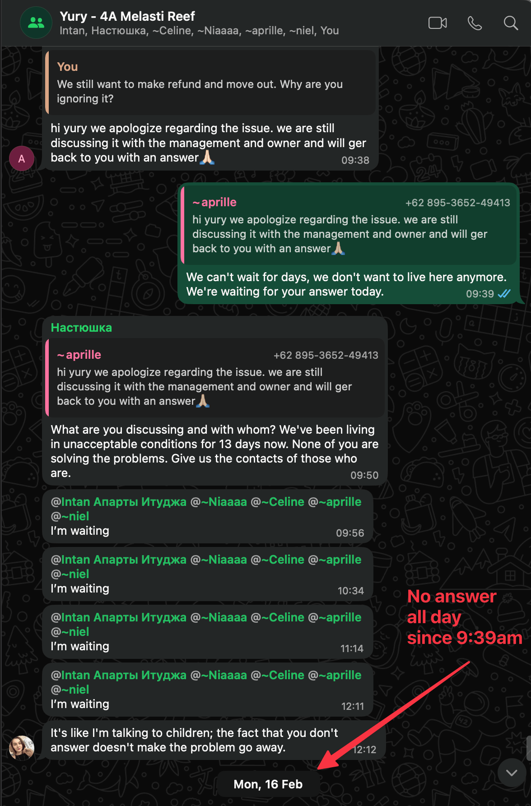
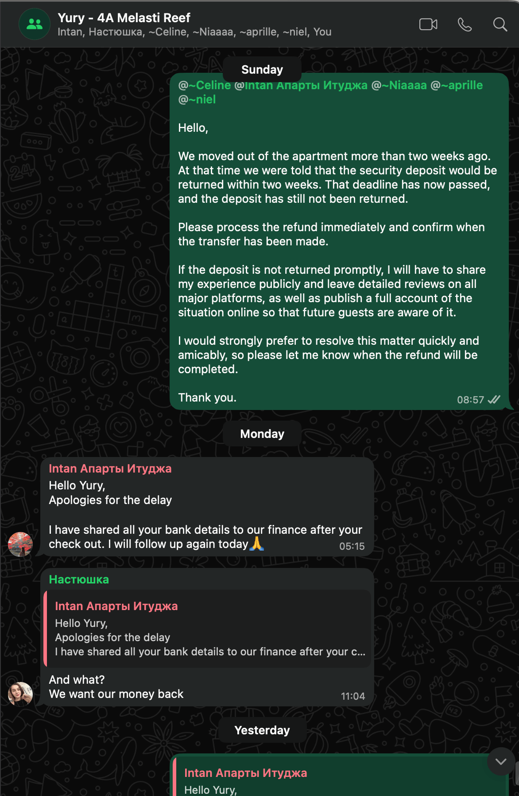
Фото и видео, зафиксировавшие состояние апартамента.
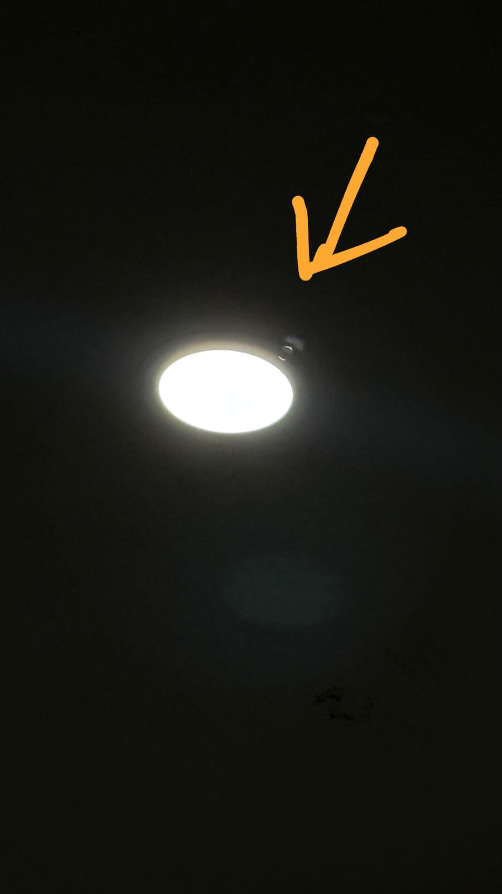
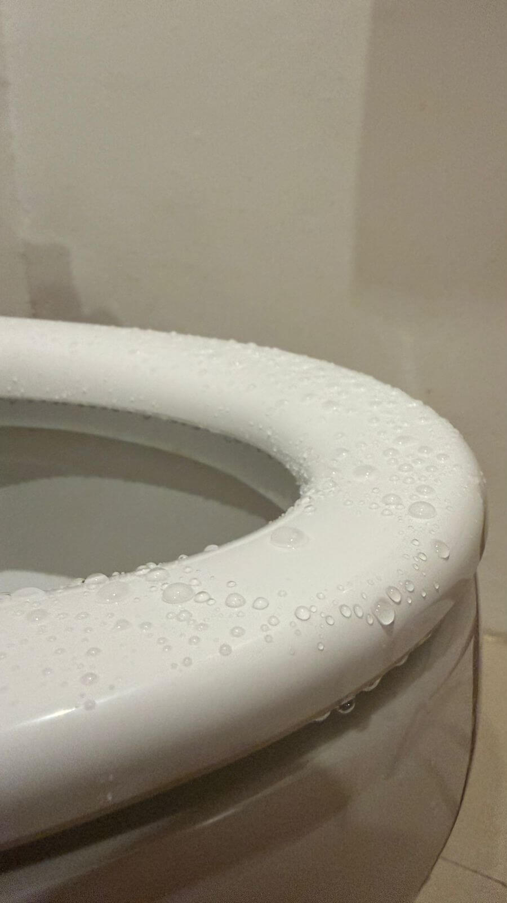
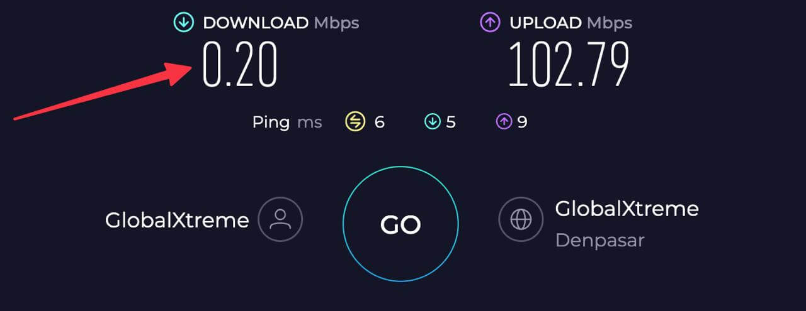
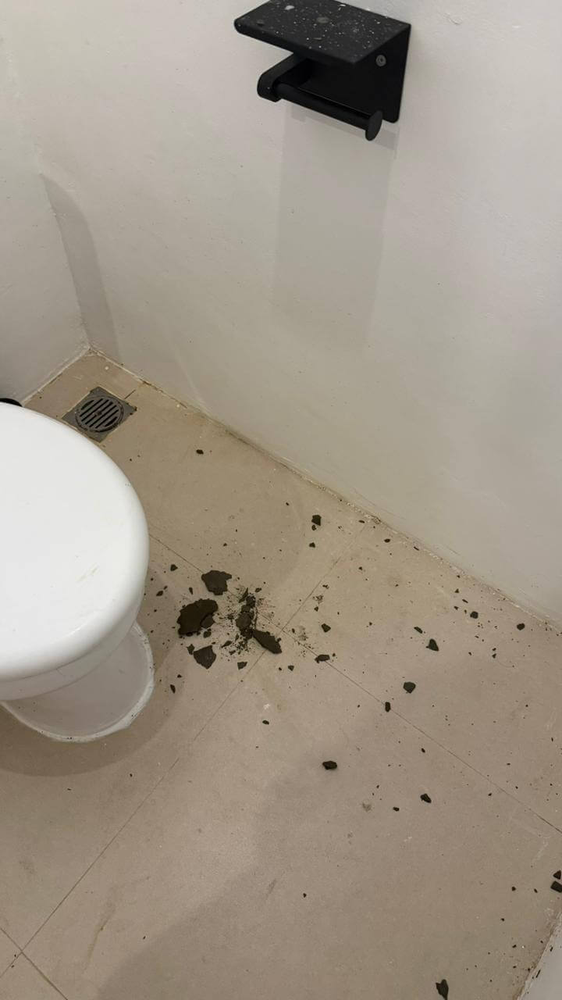
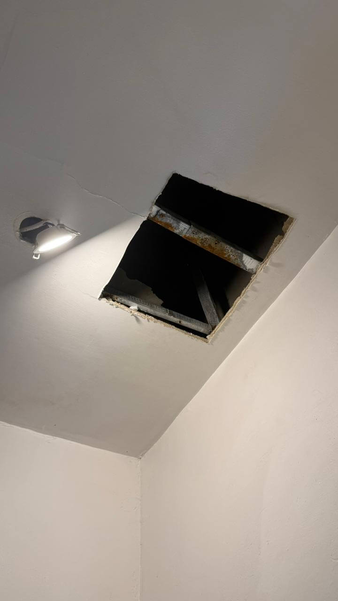
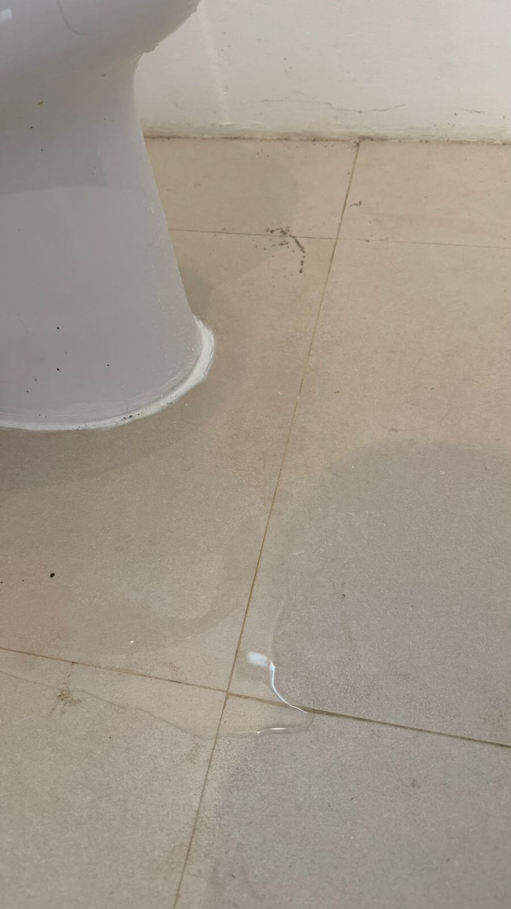
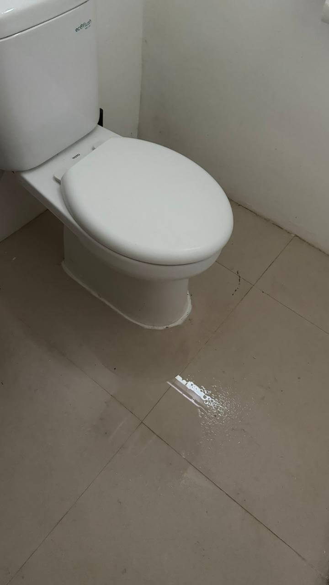
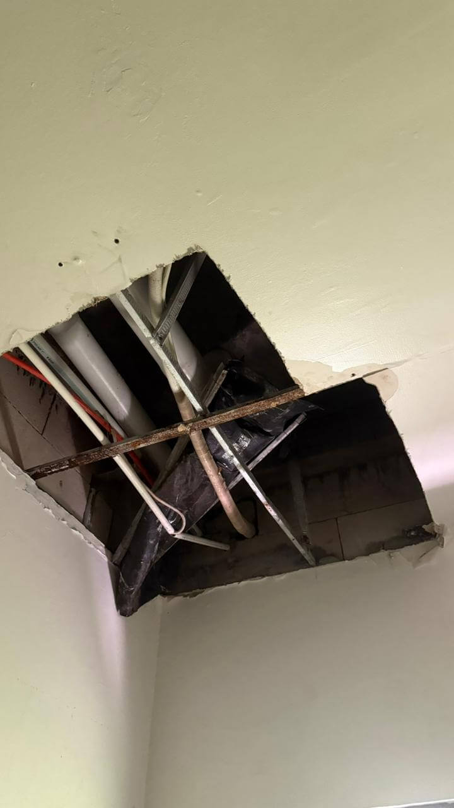
| Проблема | Длительность | Итог |
|---|---|---|
| Протечка с потолка с запахом мочи | ~19 дней | Решена за 5 дней до выезда |
| Нет горячей воды / слабый напор | ~1,5–2 недели | Решена после многократных жалоб |
| Отсутствие интернета | 6+ дней | Решена после многократных пинков |
| Падение штукатурки с потолка | Несколько дней | Временная заплатка |
| Отключение воды без предупреждения | Несколько часов | Разовый инцидент |
| Запрос на возврат денег и выселение | — | Полностью проигнорирован |
| Возврат залога | 21 день вместо 14 | Возвращён после угроз |
Главная проблема Suite Stay — не само здание, а то, что вы остаётесь абсолютно беспомощны после оплаты.
На территории комплекса нет ни одного представителя управляющей компании. Вы не можете подойти к кому-то лично, высказать претензию, потребовать решения. Единственный способ связи — групповой чат в WhatsApp, где пять сотрудников по очереди пишут «sorry for the inconvenience» и ничего не делают. Вас могут игнорировать часами и днями. Вы пишете — тишина. Звоните — трубку не берут.
За месяц проживания мы столкнулись с протечкой с потолка, которую устраняли 19 дней; с душем без нормального напора; с 6-дневным отсутствием интернета; с падением штукатурки на голову. Когда мы попросили вернуть деньги и съехать — наш запрос просто проигнорировали. Нам пришлось дожить до конца срока аренды в невыносимых условиях.
После выезда залог обещали вернуть за 10–14 рабочих дней. По факту это заняло 21 день, и залог был возвращён только после нашей угрозы опубликовать отзывы. Наши соседи предупреждали нас, что нашли отзывы о систематическом невозврате депозитов этой компанией.
Мы искренне любим Бали и живем здесь уже девятый месяц, поэтому объективно заявляем: остров прекрасен, но это место — его полная противоположность. Окажись мы здесь в роли обычных туристов, мы бы навсегда закрыли для себя это направление. Наша цель — не просто оставить отзыв, а предостеречь будущих путешественников от ошибки.